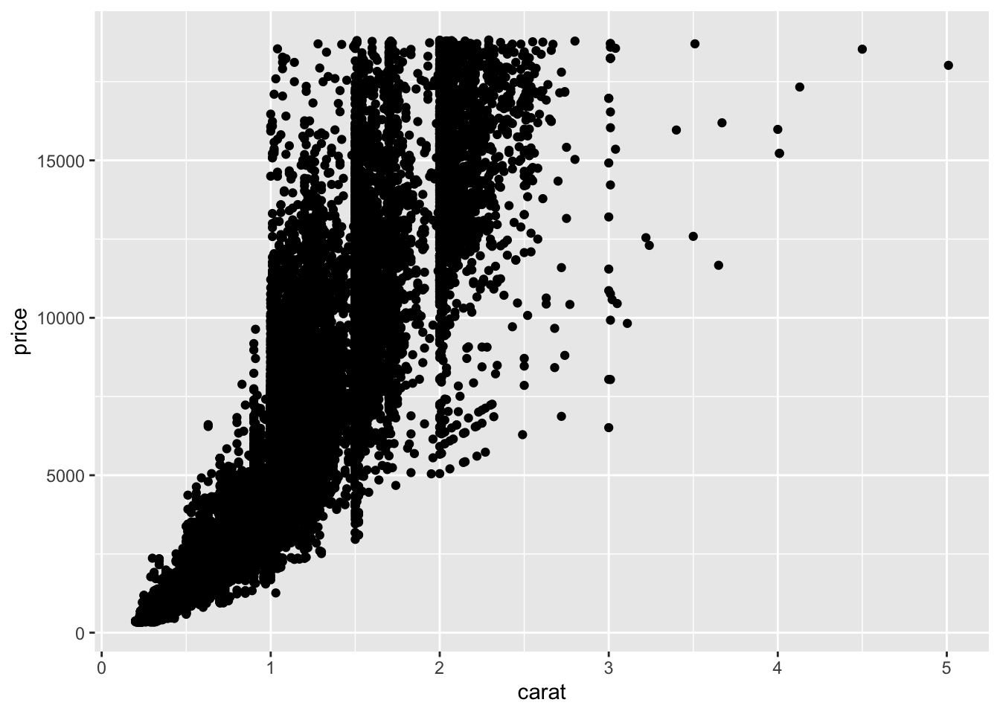
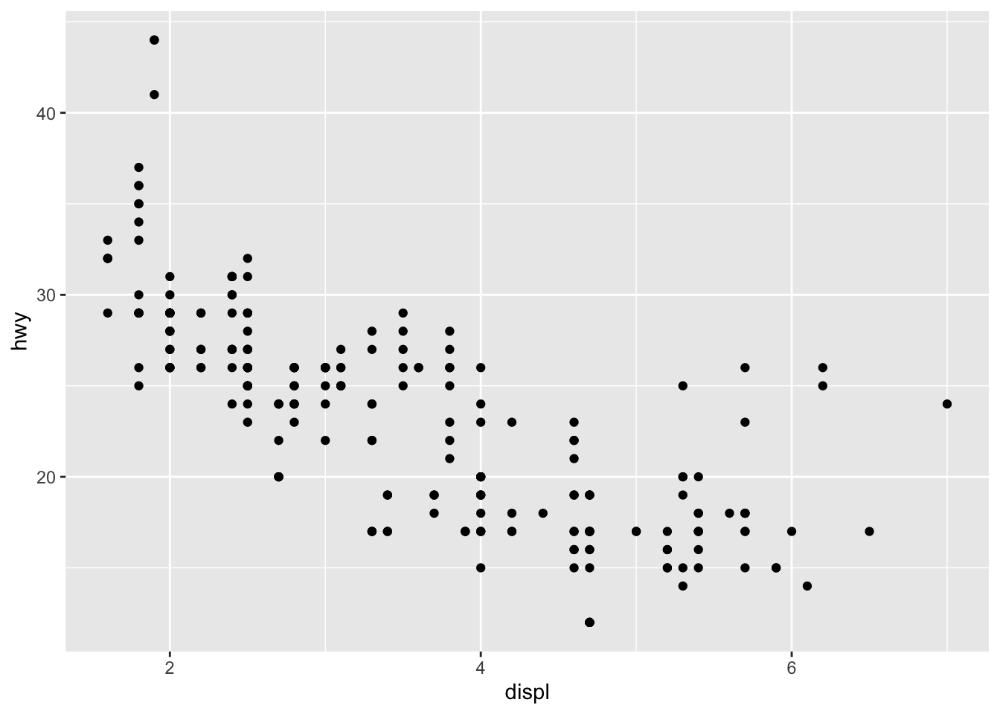
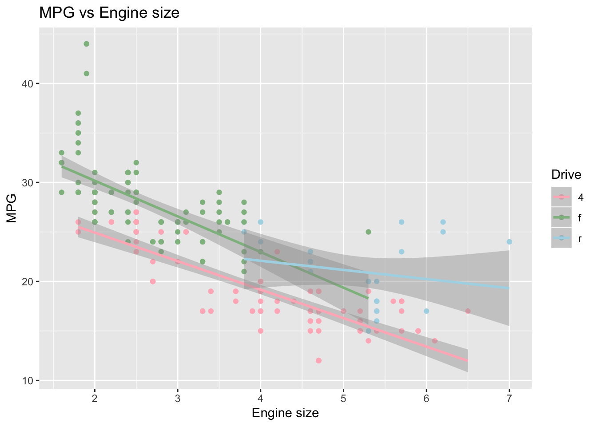
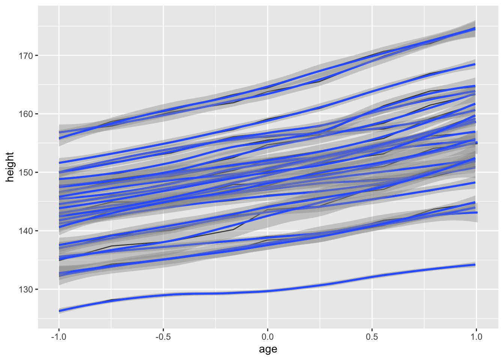
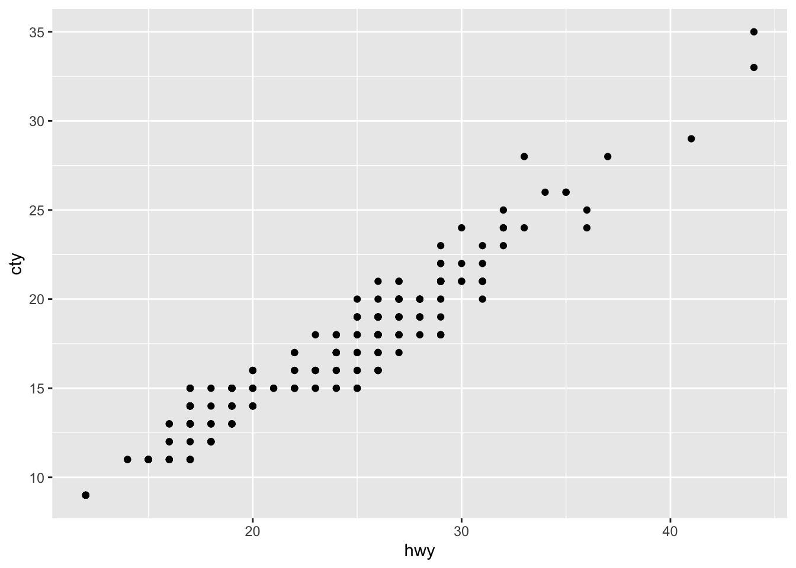

Chapter 2 Introduction to ggplot2
2.1 What is ggplot2
- The
ggplot2package (Wickham 2016) was developed to build a graphic from few graphical components (e.g., data, coordinate systems, geometric objects, aesthetics, facets, themes) based on the grammar of graphics.
“Wilkinson (2005) created the grammar of graphics to describe the deep features that underlie all statistical graphics. The grammar of graphics is an answer to a question: what is a statistical graphic? The layered grammar of graphics (Wickham, 2009) builds on Wilkinson’s grammar, focussing on the primacy of layers and adapting it for embedding within R. In brief, the grammar tells us that a statistical graphic is a mapping from data to aesthetic attributes (colour, shape, size) of geometric objects (points, lines, bars). The plot may also contain statistical transformations of the data and is drawn on a specific coordinate system. Faceting can be used to generate the same plot for different subsets of the dataset. It is the combination of these independent components that make up a graphic.”
— Wickham (2016)
- The components of
ggplot2- Data
- Geometric objects (geom for short)
- Aesthetic mappings
- Statistical transformations (stats for short)
- Scales
- A coordinate system (coord for short)
- A faceting
- Install the
tidyversepackage (or any package)- using
install.packages()function - using the
Packagespane
- using
install.packages("tidyverse")- Load the
tidyversepackage onto memory
# We need to load a package whenever we use it
suppressMessages(library(tidyverse)) 2.2 Data
- “The data are what you want to visualise and a set of aesthetic mappings describe how variables in the data are mapped to aesthetic attributes that you can perceive.” (Wickham 2016)
# diamonds is a built-in data in ggplot2
# ?diamonds display the help document for data
# tibble is a datastructure in tidyverse
diamonds## # A tibble: 53,940 x 10
## carat cut color clarity depth table price x y z
## <dbl> <ord> <ord> <ord> <dbl> <dbl> <int> <dbl> <dbl> <dbl>
## 1 0.23 Ideal E SI2 61.5 55 326 3.95 3.98 2.43
## 2 0.21 Premium E SI1 59.8 61 326 3.89 3.84 2.31
## 3 0.23 Good E VS1 56.9 65 327 4.05 4.07 2.31
## 4 0.290 Premium I VS2 62.4 58 334 4.2 4.23 2.63
## 5 0.31 Good J SI2 63.3 58 335 4.34 4.35 2.75
## 6 0.24 Very Good J VVS2 62.8 57 336 3.94 3.96 2.48
## 7 0.24 Very Good I VVS1 62.3 57 336 3.95 3.98 2.47
## 8 0.26 Very Good H SI1 61.9 55 337 4.07 4.11 2.53
## 9 0.22 Fair E VS2 65.1 61 337 3.87 3.78 2.49
## 10 0.23 Very Good H VS1 59.4 61 338 4 4.05 2.39
## # … with 53,930 more rows2.3 Geometric objects (geoms)
- “Geometric objects, geoms for short, represent what you actually see on the plot: points, lines, polygons, etc.” (Wickham 2016)
# ggplot() initializes a ggplot object.
# it can be used to specify 1) a dataset, and 2) aesthetic mapping
ggplot(data = diamonds, aes(x = carat, y = price))# geom_points() adds a new layer to a plot by drawing points to produce a scatter plot
ggplot(data = diamonds, aes(x = carat, y = price)) + geom_point()
# geom_smooth() adds an additional layer to the plot by drawing a smoothed line to capture the trend in the scatterplot
ggplot(data = diamonds, aes(x = carat, y = price)) + geom_point() + geom_smooth()## `geom_smooth()` using method = 'gam' and formula 'y ~ s(x, bs = "cs")'2.4 Exercise
typing
mtcarsin your console will display the content of themtcarsdataset. How can we display the help document for themtcarsdata?type
head(mtcars). What didhead()do? Check the help document ofhead()(mtcaris a dataframe in base R, whereas thediamondsis a tibble intidyverse).Using the
mtcarsdata, plot the scatter plot betweenmpg(miles per gallon: y axis) anddisp(displacement: x axis) with a smoothed line.
2.5 Aesthetic mappings
“A set of aesthetic mappings describe how variables in the data are mapped to aesthetic properties of the layer” (Wickham 2016)
“To describe the way that variables in the data are mapped to things that we can perceive on the plot (the “aesthetics”), we use the
aesfunction. Theaesfunction takes a list of aesthetic-variable pairs like these:aes(x = weight, y = height, colour = age). Here we are mapping x-position toweight, y-position toheightand colour toage. The first two arguments can be left without names, in which case they correspond to the x and y variables.” (Wickham 2016)
# color = color maps the variable 'color` in the dataset to the color aesthetics of points to encode further information in the graphic.
ggplot(data = diamonds, aes(x = carat, y = price, color = color)) + geom_point()# shape = cut maps the variable 'cut` in the dataset to the shape aesthetics of points to encode further information in the graphic.
# the graphic is not so informative because points are overplotted. Sometimes, facetting may handle overplotting
ggplot(data = diamonds, aes(x = carat, y = price, shape = cut)) + geom_point()## Warning: Using shapes for an ordinal variable is not advisedggplot(data = diamonds, aes(x = carat, y = price)) + geom_point(color = "blue")2.6 Exercise
mpgis similar tomtcarsbut is a built-in tibble inggplot2. 1) Plothwy(mile per gallon: y axis) againstdispl(engine displancement: x axis), 2) Given the plot from 1), map theclassvariable to color, shape, alpha, and size aesthetics.Explain what happens.
ggplot(data = mpg, mapping = aes(x = displ, y = hwy, color=drv)) + geom_point() + geom_smooth(method="lm")- This is what happens when mapping
hyw,displ, andcyltox,y, andcoloraesthetics. R creates a new dataset that contains all the data to be displayed on the plot.
| x | y | color |
|---|---|---|
| 1.8 | 29 | 4 |
| 1.8 | 29 | 4 |
| 2.0 | 31 | 4 |
| 2.0 | 30 | 4 |
| 2.8 | 26 | 6 |
| 2.8 | 26 | 6 |
| 3.1 | 27 | 6 |
| 1.8 | 26 | 4 |
| 1.8 | 25 | 4 |
| 2.0 | 28 | 4 |
2.7 Scales
In the previous table, computers don’t know how to display colors based on 4, 6, … Computers need a a hexadecimal code for colors such as
FF6C91. The mapping from the data to the final values that computers can use to display aesthetics is called a scale.“The scales map values in the data space to values in an aesthetic space, whether it be colour, or size, or shape. Scales draw a legend or axes, which provide an inverse mapping to make it possible to read the original data values from the graph.” (Wickham 2016)
scale_x_continuous()andscale_y_continuous()are the default scales for continuous x and y aesthetics: https://ggplot2.tidyverse.org/reference/scale_continuous.html.
p1 <- ggplot(mpg, aes(displ, hwy)) + geom_point()
p1
# change the axis labels
p1 + scale_x_continuous("Engine displacement (L)") +
scale_y_continuous("Highway MPG")
# also use the short-cut labs()
p1 + labs(x = "Engine displacement (L)", y = "Highway MPG")# modify the axis limits
p1 + scale_x_continuous(limits = c(2, 6))## Warning: Removed 27 rows containing missing values (geom_point).
# use the short hand functions `xlim()` and `ylim()`
p1 + xlim(2, 6)## Warning: Removed 27 rows containing missing values (geom_point).# choose where the ticks appear
p1 + scale_x_continuous(breaks = c(2, 4, 6))
# choose your own labels
p1 + scale_x_continuous(breaks = c(2, 4, 6), label = c("two", "four", "six"))ggplot(data = mpg, mapping = aes(x = displ, y = hwy, color=drv)) + geom_point() + geom_smooth(method="lm") + labs(title ="MPG vs Engine size", x = "Engine size", y = "MPG")# Create your own discrete scale
ggplot(data = mpg, mapping = aes(x = displ, y = hwy, color=drv)) + geom_point() + geom_smooth(method="lm") + labs(title ="MPG vs Engine size", x = "Engine size", y = "MPG") + scale_colour_manual(name = "Drive", values = c("lightpink", "darkseagreen", "lightblue"))
ggplot(data = mpg, mapping = aes(x = displ, y = hwy, color=cty)) + geom_point() ggplot(data = mpg, mapping = aes(x = displ, y = hwy, color=cty)) + geom_point() + scale_colour_gradient(name = "City MPG", low = "red", high = "blue")For more details about scales, see https://ggplot2.tidyverse.org/reference/.
Colors in R: http://www.sthda.com/english/wiki/colors-in-r
2.8 Statistical transformations (stats for short)
# historam shows the distribution of a single variable.
# where does count come from?
ggplot(data = diamonds, aes(x = carat)) + geom_histogram()## `stat_bin()` using `bins = 30`. Pick better value with `binwidth`.
“Statistical transformations, stats for short, summarise data in many useful ways. For example, binning and counting observations to create a histogram, or summarising a 2d relationship with a linear model. Stats are optional, but very useful.” (Wickham 2016)
- How
geom_histogram()works?- “A stat takes a dataset as input and returns a dataset as output, and so a stat can add new variables to the original dataset. It is possible to map aesthetics to these new variables. For example,
stat_bin, the statistic used to make histograms, produces the following variables:count, the number of observations in each bindensity, the density of observations in each bin (percentage of total / bar width)x, the centre of the bin" (Wickham 2016)
- “These generated variables can be used instead of the variables present in the original dataset. For example, the default histogram geom assigns the height of the bars to the number of observations (
count), but if you’d prefer a more traditional histogram, you can use the density (density). The following example shows a density histogram of carat from the diamonds dataset.” (Wickham 2016)
- “A stat takes a dataset as input and returns a dataset as output, and so a stat can add new variables to the original dataset. It is possible to map aesthetics to these new variables. For example,
# The names of generated variables must be surrounded with ..
ggplot(diamonds, aes(carat)) + geom_histogram(aes(y = ..density..), binwidth = 0.1)Every geom has a default stats.
- Position adjustments
- Position adjustments determine how to arrange geoms that would otherwise occupy the same space.
# The discrete analogue of histogram is the bar plot
s <- ggplot(mpg, aes(fl, fill = drv))s + geom_bar()
# Stack elements on top of one another
s + geom_bar(position = "stack")# Arrange elements side by side
s + geom_bar(position = "dodge")
# Stack elements on top of one another,normalize height
s + geom_bar(position = "fill")2.9 A faceting
“A faceting specification describes how to break up the data into subsets and how to display those subsets as small multiples. This is also known as conditioning or latticing/trellising.” (Wickham 2016)
“There are two types of faceting provided by ggplot2:
facet_gridandfacet_wrap. Facet grid produces a 2d grid of panels defined by variables which form the rows and columns, while facet wrap produces a 1d ribbon of panels that is wrapped into 2d” (Wickham 2016)
# facet into rows
ggplot(data = diamonds, aes(x = carat)) + geom_histogram() + facet_grid(color ~ .)## `stat_bin()` using `bins = 30`. Pick better value with `binwidth`.# facet into columns
ggplot(data = diamonds, aes(x = carat)) + geom_histogram() + facet_grid(. ~ color)## `stat_bin()` using `bins = 30`. Pick better value with `binwidth`.
2.10 Exercise
Using
mpgdata, plothwy(y) vscty(x).facet into rows using
cyl.facet into columns using
cyl.facet into rows using
cyland columns usingyear
2.11 Grouping
“In many situations, you want to separate your data into groups, but render them in the same way. When looking at the data in aggregate you want to be able to distinguish individual subjects, but not identify them. This is common in longitudinal studies with many subjects, where the plots are often descriptively called spaghetti plots.” (Wickham 2016)
Oxboysis a dataset in thenlmepackage.Oxboysincludes the height of a selection of boys from Oxford, England versus a standardized age.
library(nlme)##
## Attaching package: 'nlme'## The following object is masked from 'package:dplyr':
##
## collapse# age = a numeric vector giving the standardized age
head(Oxboys)## Grouped Data: height ~ age | Subject
## Subject age height Occasion
## 1 1 -1.0000 140.5 1
## 2 1 -0.7479 143.4 2
## 3 1 -0.4630 144.8 3
## 4 1 -0.1643 147.1 4
## 5 1 -0.0027 147.7 5
## 6 1 0.2466 150.2 6ggplot(Oxboys, aes(age, height)) + geom_line()
ggplot(Oxboys, aes(age, height, group = Subject)) + geom_line()# In many cases, this is not what we want
ggplot(Oxboys, aes(age, height, group = Subject)) + geom_line() + geom_smooth()## `geom_smooth()` using method = 'loess' and formula 'y ~ x'# group = 1 override the default grouping
ggplot(Oxboys, aes(age, height, group = Subject)) + geom_line() + geom_smooth(aes(group = 1))## `geom_smooth()` using method = 'loess' and formula 'y ~ x'
# facet is also useful for visualizing longitudinal data
ggplot(Oxboys, aes(age, height)) + geom_line() + facet_wrap(~Subject)2.12 Themes
“Themes are a powerful way to customize the non-data components of your plots: i.e. titles, labels, fonts, background, gridlines, and legends.” More details are available at https://ggplot2.tidyverse.org/reference/theme.html
ggplot(mpg, aes(x = hwy, y = cty)) + geom_point() ggplot(mpg, aes(x = hwy, y = cty)) + geom_point() + theme(panel.background = element_rect(fill = "white", colour = "grey50"))
ggplot(mpg, aes(x = hwy, y = cty)) + geom_point() + theme_classic()2.13 Save a ggplot
ggsave()is a convenient function for saving a plot. It defaults to saving the last plot that you displayed.
ggsave("mtcars.pdf")## Saving 7 x 5 in image2.14 More resources
ggplot2Reference: https://ggplot2.tidyverse.org/reference/index.html- Many R galleries (e.g., https://www.r-graph-gallery.com)
References
Wickham, Hadley. 2016. Ggplot2: Elegant Graphics for Data Analysis. Springer-Verlag New York.